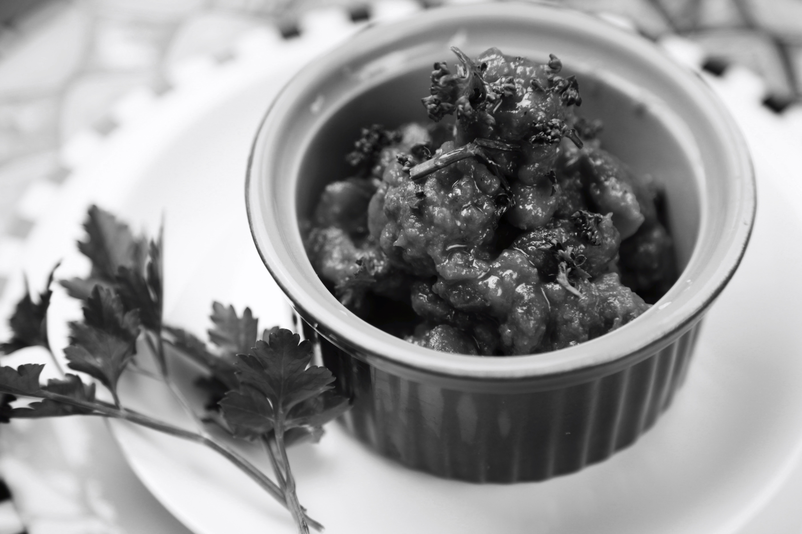

Chili

A yummy homemade classic chili recipe. This is a traditional chili recipe made using
ground beef, beans and a simple blend of chili seasonings. Simple yet delicious.
Chili Ingredients
- 1 tablespoon olive oil
- 1 medium yellow union, diced
- 1 pound 90% lean ground beef
- 2 1/2 tablespoons chili powder
- 2 tablespoons granulated sugar
- 2 tablespoons ground cumin
- 2 tablespoons tomato paste
- 1 tablespoon garlic powder
- 1 1/2 teaspoons salt
- 1/2 teaspoon ground black pepper
- 1/4 teaspoon ground cayenne pepper, optional
- 1 1/2 cups beef broth
- 1 (15 oz.) can petite diced tomatoes
- 1 (16 oz.) can red kidney beans, drained and rinsed
- 1 (8 oz.) can tomato sauce
Chili Recipe Instructions
- Add olive oil to large soup pot over medium-high heat, 2 minutes
- Add onion cook for 5 minutes, stir occasionally
- Add ground beef to pot
- Break ground beef apart with wooden spoon, cook 6-7 minutes
- Add chili powder, cumin, suagr, tomato paste, garlic powder, salt, pepper, cayeene
- Add broth, diced tomatoes (with juice), beans, tomato sauce
- Bring to a low boil, reduce heat to simmer for 20-25 miues, stir occasionally
- Remove from heat, chill 5-10 minutes before serving